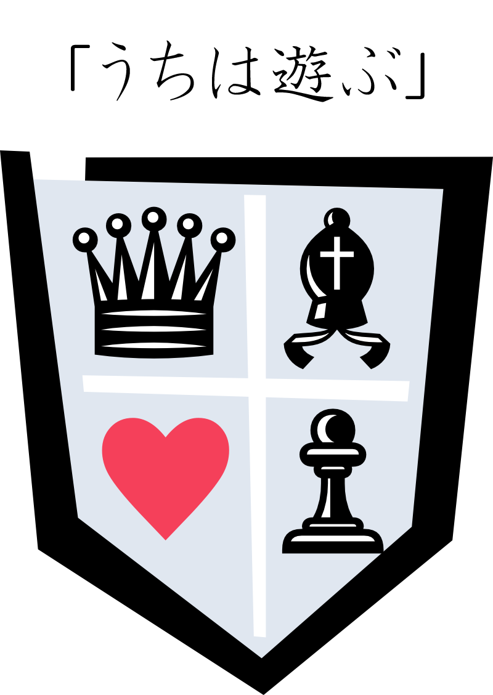

鄙の姫、宮処の巫女、余所者の嫁
「お前は器量よしじゃきに、官人の嫁にしてつかぁす」。めったに会えない父は、まれに会うたびに娘にそう言った。家にいなかったのではない。訛りが伝染らないよう、遠ざけられていた。
「戦が終わったら、こういうオートバイが道にあふれるのよ」。白衣と緋袴をまとい、奇妙な小さな自動二輪車を乗り回す彼女は、宮処からきた。
「地付きの平公卿の姫が、王女様に逆らえるもんかえ」。姫は、常に恐れ、怒り、悲しんでいたけれど、人を見下すことはけっしてない。
近代ファンタジー小説『鄙の姫、宮処の巫女、余所者の嫁』を、平日の午後3時に配信しています。
過去の配信分は？
第1回から7回まではこちらでご覧いただけます。